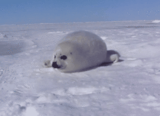

Waarin wiikkowiesti 10/2018 - Minilomasta tenttiviikkoon
02.04.2018 fuksit / wiikkoviesti / wappu / lalasauna /
Hauskaa pääsiäistä!
Launtaina seikkailtiin Ödwentsön merkeissä ja nautiskeltiin teidän tekemistä hienoista Jäynistä, kiitos vielä niistä! Toivottavasti olette kerenneet ladata akkuja tulevaa tenttiviikkoa varten. Wappukin lähestyy päivä päivältä, samoin kuin kaikki sen mukanaan tuomat tapahtumat!
Fuksipeijaisjoukkueen ilmoittautuminen sulkeutuu tänään. Haluaisin vielä painottaa, ettei ilmoittautuminen tosiaankaan sitouta sinua vielä esiintymään speksilavalle, vaan auttaa pysymään mukana tiedotusloopissa! Fuksipeijaisiin kuuluu muitakin tehtäviä kuin Fuksispeksi, joista tulee lisätietoa lähempänä Wappua. Speksin parissa riittää myös monipuolisesti tehtävää, sekä speksin käsitettä on myös lupa venyttää omien vahvuuksien näköiseksi. Lähde mukaan tekemään fuksiwapustasi unohtumaton! <3
Myös yöjäynähakemuksia otetaan vastaan vielä 5.4. klo 5:10 asti!
Jos et päässyt Wappuinfoon tai tarvitset muistinvirkistystä, voit lukea tilaisuuden kalvot tästä!
Fuksiwaarikin yrittää läpäistä kurssinsa, eikä siksi lupaa päivystää tällä viikolla kiltahuoneella minään tiettynä aikana. Telegramissa saa kuitenkin aina tarvittaessa kiinni! Tule jutskaamaan Wapun vietosta, lakkiin vaadittavista pisteistä tai muista askarruttavista kysymyksistä!
<3 Milla
Sisällysluettelo
- Tärkeää
- Fuksipeijaisjoukkueeseen hakeminen DL 2.4. klo 23:59
- Yöjäynäjoukkueeseen hakeminen DL 5.4. klo 05:10
- Fuksintappo ti 17.4. klo 20:00 @ Takkakabinetti, Jämeräntaival 3
- Fuksi- ja kilta-asiat
- Lalasauna ti 10.4. klo 18:00 @ Rantasauna
- Loppunurkkaus
Tärkeää
1. Fuksipeijaisjoukkueeseen hakeminen DL 2.4. klo 23:59
Fuksivuosi huipentuu kaikkien Otaniemen yhdistysten keskinäiseen hyväntuuliseen kilvoitteluun, Fuksipeijaisiin, jotka on julistettu tapahtuviksi Fuksimajurin ensimmäisessä päiväkäskyssä. Fuksipeijaiset ovat ainutlaatuinen kokemus, ja ne koostuvat Fuksispekseistä 29.4., Yöjäynästä 12.4. ja 29.4. sekä mahdollisista muista myöhemmin ilmoitettavista lisätehtävistä. Fuksipeijaiset määräävät lakkienjakojärjestyksen.
Fuksipeijaisjoukkueeseen pääsevät mukaan kaikki halukkaat, joten ilmoittaudu rohkeasti mukaan täällä! Kaikille löytyy varmasti sopivankokoista tekemistä, vaikkei speksilavalle haluaisikaan nousta.
2. Yöjäynäjoukkueeseen hakeminen DL 5.4. klo 05:10
Yöjäynä on ainutlaatuinen lisä fuksiwappuun, ja siihen on mahdollisuus osallistua vain kerran elämän aikana. Jokaisesta Otaniemen killasta valitaan 9 henkilön kokoinen joukkue mukaan Yöjäynään, joka tapahtuu 12.4. sekä 29.4., ja joka on täynnä yllätyksiä, salaisuuksia ja loistavaa porukkaa! On toivottavaa, että pääset osallistumaan Yöjäynän kumpaankin osaan.
Mutta miten pääsen mukaan? Hakemusten deadline on 5.4. klo 05:10:18. Yöjäynäjoukkueeseen haluavan täytyy toimittaa henkilökohtainen vapaamuotoinen hakemus Tietokillan kiltahuoneen TV-tason vasemmalle puolelle rajatulle alueelle ja merkattava se niin, että sen hakemukseksi ymmärtää.
Hakemuksesta tulee käydä ilmi ainakin seuraavat asiat:
- Hakijan yhteystiedot (nimi, sähköposti, puhelinnumero)
- Mitä teekkarius merkitsee sinulle?
- Miksi juuri sinut tulisi valita joukkueeseen?
Huomioikaa, että yöjäynähakemuksessa katsotaan hyvällä itsensä toteuttamista, luovuutta, ja kekseliäisyyttä! Yöjäynäjoukkueen kokoonpanon valitsee Arwowaltainen Yöjäynäraati, eikä päätöksestä voi valittaa.
Muista myös ilmoittautua Peijaisjoukkueeseen täällä!
3. Fuksintappo ti 17.4. klo 20:00 @ Takkakabinetti, Jämeräntaival 3
Jotta teekkari voi syntyä, on fuksin kuoltava.
Sisäinen fuksisi kuolee vain kerran, joten ota siitä kaikki irti. Fuksitappo on jännittävä seikkailu Otaniemessä läpi haasteiden ja vaarojen, kenen muunkaan, kuin parhaiden ystäviesi kanssa. Tule mukaan ja koe se itse! Seikkailu alkaa Takkakabinetista ja jatkot ovat Rantsulla tapahtuman loputtua, missä on tarjolla ruokaa. TAPAHTUMA ON ALKOHOLITON!
Ilmoittautuminen Fuksintappoon aukeaa huomenna ti 3.4. klo 12!
Fuksi- ja kilta-asiat
1. Lalasauna ti 10.4. klo 18:00 @ Rantasauna
Saavu Rantasaunalle verryttelemään äänihuuliasi löylyjen lämpöön ja lurittelemaan teekkarilauluja yhdessä ystäviesi kanssa!
Loistava tilaisuus suorittaa Laulukoe-piste. Laulukoe suoritetaan n:n (n >=1) hengen ryhmissä, jolloin teekkarilauluja on laulettava n+1 kappaletta. Yhden näistä lauluista on oltava ulkoa osattu Teekkarihymni.
Loppunurkkaus
Mun liikkumiskyky mummolassa nautitun pääsiäislounaan jälkeen...
